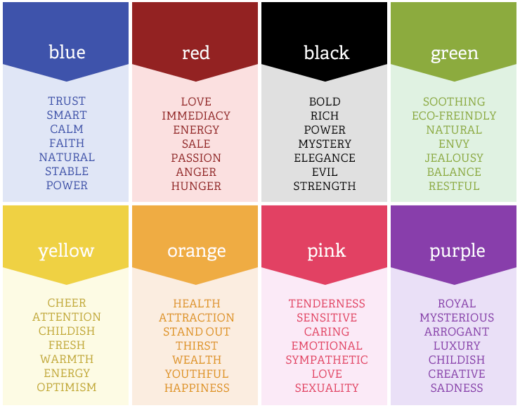

Night's Window Blog
Research: Reading Auras
April 21, 2016
In the last Blog post I mentioned that I did some research on how to read auras. Well I thought I would
post it so others could learn how to read them along with me. Today is day two of trying to read other
people's auras, and let me tell you, it's not easy. But I think I'm getting there. Here's a part of the
information I found on how to read auras.
- "Situate the person in front of a very softly illuminated PLAIN WHITE background. A color background will
change Aura colors, so you need additional knowledge about combining colors. Some combinations of
background and Aura colors may cause misinterpretation problems.
- Choose ONE SPOT to look at. The middle of the forehead is VERY GOOD. This is a location of so called Brow
Chakra or the Third Eye. In some cultures (India) they put a mark on a forehead. Such a mark in ancient
times could mean the invitation to look and see the Aura.
- Look at this spot for 30 to 60 seconds or longer
- After 30 seconds analyze surroundings with your peripheral vision, while still looking at the same spot.
Continuing the concentration is most important. Resist temptation to look around. You should see that the
background nearby the person is brighter and has a DIFFERENT color than the background further away. This
is your own perception of the Aura. The longer you concentrate, the better you will see it. Remember,
concentration on one spot increases your sensitivity by accumulating the effect of the Aura vibration
reaching your eyes."
This information was taken word for word from
http://www.thiaoouba.com/see_aura_color
.htm
ResearchApril
Research: Aura Colors
April 21, 2016
Can you see peoples' auras? Some of us can see others' auras. I was curious and think it could come in
handy for Night's Window so I researched the meaning of different Aura Colors. The information I
found was very interesting, especially the part about learning how to read auras. Apparently, you
don't have to be born with the skill to read auras. I think I'm going to try to learn how.
This is one of the things I found on Aura Color Meanings:

ResearchApril
Scene: Normal Girl
April 19, 2016
As she strolled casually on the pavement, she glanced around, trying to not look conspicuous. Jayden
skipped quickly in Mailynn's direction.
"Where are you going?" Jayden asked cheerfully.
"I'm not sure...I was looking for you."
"Well...you found me!" Jayden's voice bounced with joy. Mailynn knew something was up.
"Would you be quiet!?" Mailynn glanced in all directions, "I want to fit in."
"If you want to fit in, Mai," Jayden hooked elbows with her and spun them around, "then ya gotta act like
a normal teenage girl." She laughed as a couple walked by.
"Okay...So Jayden?"
"Yes?"
"Where are we going?"
Any thoughts?
SceneApril
Research: Mirror Myths
April 15, 2016
"Mirrors were often used in magical and psychic rituals for scrying – remotely viewing another person or
place – and communicating."
I plan to use this superstition at some point in the book. Where do you think it will fit in? Any ideas?
Submit them
here.
Another interesting one: "If you feel sorrowful or troubled while home alone, with no one to talk to and
no apparent way to control your depression, stand before a mirror and gaze into your eyes. Your anxiety
should disappear."
This information was found at
Week In
Weird
Any thoughts?
ResearchApril
Research: Stone Meanings
April 14, 2016
The last few days I've been doing a lot of research about topics that might help with writing Night's
Window. This includes stone colors. Since there is a little bit of witchcrafty stuff in Night's Window,
it would be a great idea to have to real facts about stones and the meaning or "power" behind each one.
One thing I learned from this research is that there are a lot of different kinds of stones. The first
group I dug further into was Healing Stones.
A ton of Healing Stones exist, if you believe in their power. To list a few:
|
|
Abalone is believed to hold a great amount of
energy of great healing and soothing energy. This stone is known to encourage a calmer
demeanor. The pastel rainbow of colors enhance feelings of peace, beauty, compassion and
love. To some, this stone is sacred. |
|
|
Agate is one of the oldest healing stones. This is a stone of
strength. This is also a very protective stone, making it the perfect stone for amulets and
medicine bags. It also can bring courage, emotional strength and self confidence. |
|
|
Amethyst is a natural stress reliever that encourages inner strength
and brings wealth. It's a crystal of spiritual growth and protection. It brings clarity to
the mind. This stone can help you become more in tune with your feelings so that you get to
know yourself on a deeper level. This stone can repel negative energy and attract positive
energy. |
This information has come from
https://www.energymuse.com/about-gemstones. To
see more, please visit that site and read on.
Any thoughts?
ResearchStonesApril
Scene: Cave Echo!
April 11, 2016
The cave walls started to close in on her as she sank to the dirt floor and tears rolled down her cheeks.
"Mailynn?" a voice echoed off the rock walls, "Mailynn, are you in here?" Mailynn rose to her feet and
scurried around the cave, trying to find where the voice was coming from.
"Who is there?" Mailynn's voice shook as the words escaped past her lips.
Any thoughts?
SceneApril
Scene: It's the Mirror!
April 9, 2016
“May, I’m sure he is fine. He’s just hiding. He’s just scared.” Jess tried to calm her best friend down.
Silence filled the air, “Jess, that doesn’t make any sense. Sure he was scared so he probably hid, but
where is he now?” Mailynn looked into Jessica’s eyes, “Did you hear what he said before he disappeared?”
She shook her head. “He said, ‘it’s here’ and he sounded so scared!"
Jessica hesitated, “I’m sure he was just trying to scare you…” she didn’t believe her own words. There
was a brief pause.
“It’s the mirror!” a thought jumped into Mailynn’s head.
“What is?”
Mailynn ran down the hall of her little brothers’ school, Hill-side High, and out the front door.
“Mailynn! Wait! We have to wait for Colton!” Jessica stood alone in the hall as the last bell of the day
rang and all the students scurried out of the classrooms, rushing to their buses.
Any thoughts?
SceneAprilPlot Twist
Scene: Marty is Gone
April 9, 2016
Once again, the five friends joined hands at the table with candles in front of each of them.
Mailynn was determined to make this chant work. The flame flickered in the dark room as Mailynn's
breath became more abrupt. The white candle was glowing, the wax turning to a color of power and
aggression. Excitement and worry filled Mailynn's heart as she saw the effects of the words they
repeated.
The room filled with an unfamiliar air. A cold breeze surrounded the group. Mailynn heard a
whisper.
"It's here." Marty, Mailynn's 14 year old brother, whispered with a tint of fear in his voice.
Mailynn opened her eyes and glanced around the kitched of her childhood home.
"Marty?" Mailynn yelled out. He wasn't there but she still felt his hand in hers. The connection
broke as everyone opened their eyes, "Marty? Where are you? This isn't funny Marty! Mailynn's
voice turned from frightened to annoyed. As a faint, terrified scream responded, Mailynn jumped
out of her chair and scrambled all over the room, the house; No Marty.
The lights snapped on and she saw it. There it was just hanging on the wall like it belonged
amongst the decor. The small mirror that Jayden carried with her wherever she went filled
everyone with the sense of fear and dread. The day Jayden died, it hung itself on the wall, and
any time it appeared out of thin air, someone either dies or disappears with no explanation.
"Guys...I think we need to get out of here!" Jess suggested quietly.
"I'm not leaving without Marty!" Mailynn ran around the room again.
"May, that mirror is back. You know what that means. We need to go!" Jess tried to pull Mailynn
with her by the elbow. Mailynn tugged back.
"He's my brother, I can't just leave without him!" Mailynn insisted. Jessica pulled on Mailynn's
arm harder, dragging her out the door with the rest of the group.
Any thoughts?
SceneAprilCharactersPlot Twist
Scene: Second Try
April 8, 2016
"The chant didn't work because not everyone believed it would. It was working until Ayla broke the
connection. We have to try again."
"Umm...you're kidding right?"
"No Jess. We have to try again." a hint of sadness filled Mailynn's voice. "It's..." there was a long
pause. "It's my mom." A tear rolled down her cheek. "I have to get her back."
Any thoughts?
SceneApril
Scene: Lost Once More
April 7, 2016
"Umm...Hello?" Mailynn got up onto her bare feet and brushed the rocks and dirt off her hands and
clothes. She looked around as the air became cold and empty, "Anyone there?" She paused, "Not
again!" She screamed out, quickly covering her mouth as the echo vibrated off the cave walls.
All alone, Mailynn explored the cave's path, leaving a trail of x's in the dirt along the way.
Any thoughts?
SceneApril
Scene: New Friend
April 6, 2016
"Wait a second!" There was a slight pause and a moment of realization. "You're Jayden." Another
pause as Jay looked at Mailynn with raised brows, "as in Jayden Cooper?"
"No. My last name is Selston. Jayden Ann Selston. Who is Jayden Cooper?" Jay asked as they both
walked across the yard of fake plants and trees.
Any thoughts?
SceneApril
Scene: New Land
April 5, 2016
"Ummm...excuse me?" Her voice shaky, Mailynn got up from where she was thrown to, "Excuse me, Sir?" she
paused, turned around, "Ma'am?" No one even blinked in her direction.
What am I supposed to do? How do I even know if I'm in the right place?
Her thoughts were running wild, like they had nothing holding them back anymore. Mailynn used to stop
herself from thinking things that her friends thought were crazy. She thought maybe if she held them
back, then she would stop believing them. But in this world, Mailynn couldn't control her thoughts. Her
head pounded as they all came forth.
Mailynn jumped back suddenly. Leaning forward towards a bush, Mailynn thought she saw someone watching her.
"Pst! Pst!" a voice tried to get her attention.
"Hello?" Mailynn tip toed towards to the bush, "Who is there?" Mailynn screamed as a hand pulled her
through the bush and she fell to the grassy floor.
"Would you be quiet!" the girl said softly but sternly. She wasn't any older than fourteen years old.
"Who are you?" Mailynn whispered back.
"The name's Jay. Short for Jayden. Where did you come from?" She had a ver odd accent. Mailynn couldn't
quite figure out where it was from.
"I'm from Turk. Where am I?" Mailyn looked all around her. Surrounded by trees and flowers, "Are we in a
garden?" Mailynn stood up slowly and peaked over the bush she was pulled through, "Is this fake?" she
said, stroking the bush gently. She pulled back her hand as she got poked with the pointy pine on the
tree next to her.
Any thoughts?
SceneApril
Scene: Small Mirror
April 5, 2016
"I always noticed that mom carried a small mirror with her. Though, she never used it as a mirror."
"Why'd she have it then?" Jess asked, swinging her long blond hair behind her right shoulder.
"I don't know..." Mailynn trailed off into thought.
Any thoughts?
SceneApril
Scene: Launched
April 4, 2016
"Aperi ad locum Tasilan" Maiylnn chanted these four foreign words three times just like the book had
described, with a picture of her mother in the middle of a circle of white candles. The flames grew
higher and Mailynn backed away. The connection broke. Suddenly Mailynn was launched back and into a tree.
When she came to, she was no longer by the bookstore she so dearly loved.
Any thoughts?
SceneApril
Scene: Writing the note
April 3, 2016
My name is Mailynn. Mailynn Addison Cooper. I'm the daughter of Steven and Jayden Cooper. I have a sister
(Stephanie Ann Cooper) and two brothers (Colton Douglas Cooper and Martin Adam Cooper. My mother was
taken from us but she's alive, I just know it! I believe she was taken to a different world. I believe
she was taken back home. No one believes me, not even Jess. I'm writing this note because I don't know
when or if I will be coming back. I think the world I'm going to is called Tasilan. I read about it in a
book I found in a mythical-reading bookstore at the mall. If I do find a way back to Turk, I'm bringing
my mother home with me. I'm not leaving there without her!
Mailynn placed the ripped paper on the front step of the bookstore, under a rock. She hoped it would be
found eventually. Maybe whoever found it would believe her.
Any thoughts?
See all of the scene ideas
SceneApril
Chapter One
March 27, 2016
The flame flickered as the room filled with a cold breeze. Mailynn, her sister, her best friend and two
close friends sat around the table hand-in-hand hoping that their chant would reveal something. Five candles
spread out, one in front of each person. The lights snapped off and the candles each blew out as if by a person
one-by-one.
"This is too much, Mailynn. I'm outa here!" The connection broke as Ayla took her hands from the magical
circle. The light glashed back on and the room grew hotter.
Any thoughts?
Click to read more.
ChapterChapter OneMarch
Prefix
March 26, 2016
Once Upon A Time there was a small school called Hill-side High School in a small, almost invisible town called Turk.
In this town, a family of five suffered a terrible loss. A mother, a wife. Her name was Jayden. Jayden was a fine woman; one
that every town woman envied. She was smart, kind, and beautiful. But she also had her secrets. No one knew Jayden; not really. She
had one particularly dark secret that not even her family knew about. It was this secret that took Jayden from her beloved family.
Jayden was not from this land we call Earth. Well...she was but not from this dimension. On her 14
th birthday, little Jayden
found a portal to a new land, a new time and a new home. This portal never completely closed. She kept it with her at all times as a
reminder of her real home.
Her whole life...
Click to read more.
ChapterIntroductionMarchPrefix
Introduction
March 18, 2016
Would you like to help me write my third book? This blog and website is meant to be a community
writing experience. I would like help with my next writing project. The title of my book is
“Night’s Window”. I have the introduction partially written. With each new idea, from either myself or
my readers, I will post it here. Please use the contact form to submit any ideas or feedback you
have for me.
Introduction